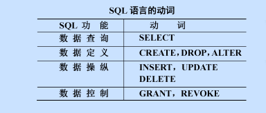
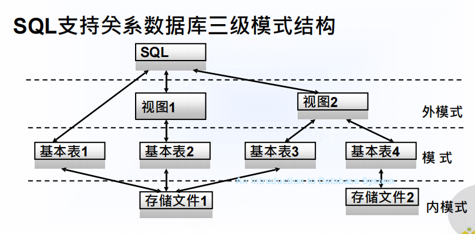
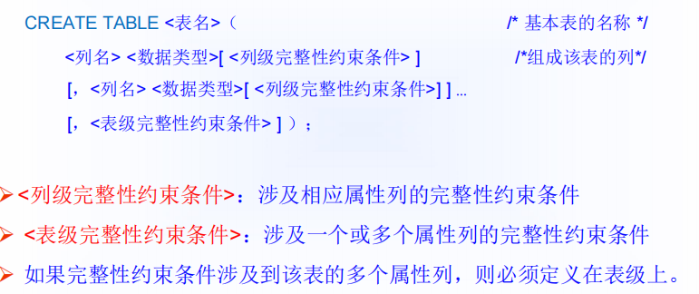
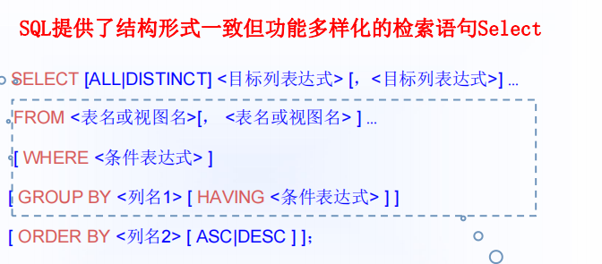
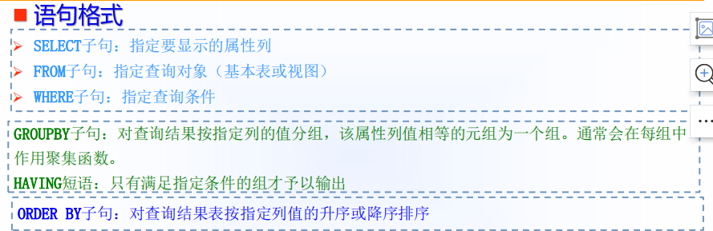
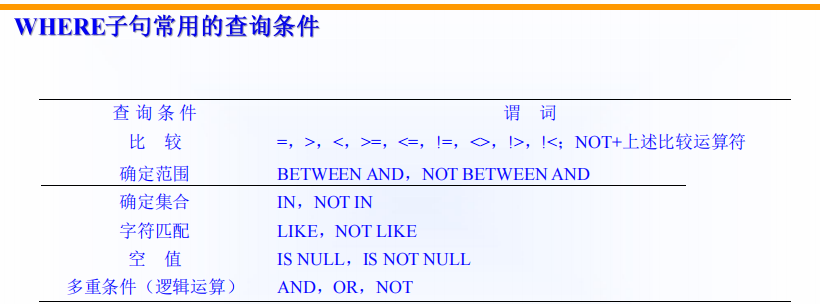
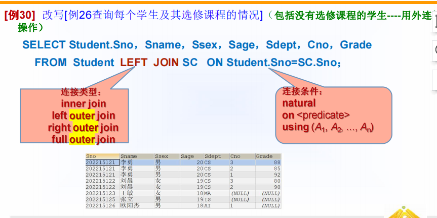
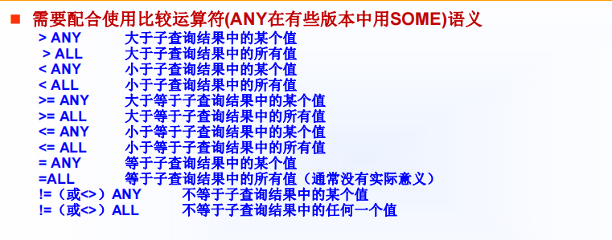
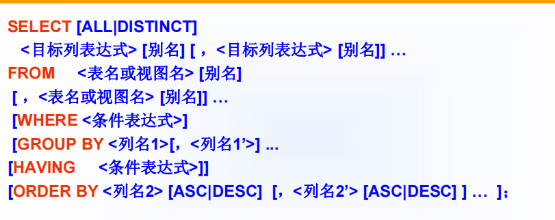
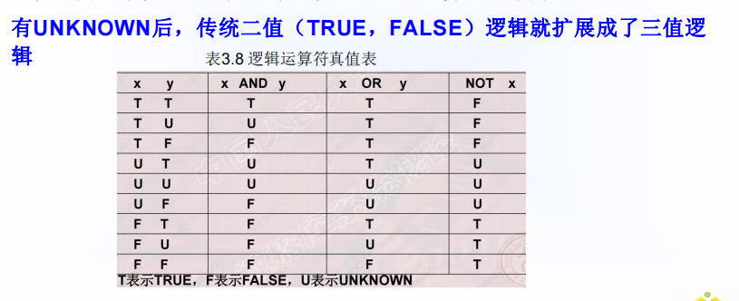

第三章 关系数据库标准语言SQL
[TOC]
3.1 SQL概述
-
SQL 集数据定义语言（DDL），数据操纵语言（DML），数据控制语言（DCL）功能于一体


3.2 学生-课程数据库
3.3 数据定义

数据库和模式的定义
1 | # 1、创建数据库 |
-
cascade–级联
-
restrict–限制
基本表的定义

1 | primary key # 主码定义 |
修改基本表的定义
1 | ALTER TABLE <表名> |
删除基本表
1 | DROP TABLE <表名>［RESTRICT| CASCADE］； |
索引的建立与删除
-
DBMS一般会自动建立以下列上的索引 primary key、unique
1 | CREATE [UNIQUE] [CLUSTER] INDEX <索引名> |
3.4 数据查询
3.4.1 单表查询


-
ALL: 默认，不取消重复的行
-
distinct：取消重复的行

确定集合
1 | # [例11] 查询信息系（IS）、数学系（MA）和计算机系（CS）学生的姓名和性别。 |
字符串匹配
-
通配符（%–表示任意长度的字符串 _ – 表示单个字符）
-
字符串匹配： [NOT] LIKE ‘<匹配串>’ [ESCAPE ‘ <换码字符>’]
-
ESCAPE 短语：当用户要查询的字符串本身就含有 % 或 _ 时，要使用ESCAPE ‘<换码字符>’ 短语对通配符进行转义。
1 | SELECT Cno,Ccredit FROM Course |
涉及空值的查询
-
is null
-
is not null
对查询结果排序
-
order by
1 | #［例18］查询全体学生情况，查询结果按所在系的系号升序排列，同一系中的学生按年龄降序排列。 |
使用聚集函数
1 | # 统计元组个数 |
对查询结果分组
-
使用GROUP BY子句后，SELECT子句的列名列表中只能出现分组属性和聚集函数，或者说，select 后面的所有列中,没有使用聚合函数的列,必须出现在 group by 后面。
1 | # 查询选修了3门以上课程的学生学号。 |
3.4.2 连接查询
连接操作的执行过程
-
嵌套循环法
-
排序合并法
-
索引连接
自身连接
1 | SELECT FIRST.Cname ， SECOND.Cname |
外连接

1 | # 改写[例26查询每个学生及其选修课程的情况]（包括没有选修课程的学生----用外连接操作） |
多表连接查询
1 | # 查询每个学生的姓名、选修课程名及成绩 |
3.4.3 嵌套查询
-
一个SELECT-FROM-WHERE语句称为一个查询块。
-
将一个查询块嵌套在另一个查询块的WHERE子句或HAVING短语的条件中，称为子查询。
-
子查询中不能使用ORDER BY子句。
-
不相关子查询与相关子查询的区别与处理。
1.带有in谓词的子查询
1 | SELECT Sno，Sname，Sdept FROM Student |
带有比较运算符的子查询

1 | # [例36] 查询其他系中比信息系所有学生年龄都小的学生姓名及年龄。 |
带有exists谓词的子查询
1 | # 查询没有选修2号课程的学生姓名。 |
相关子查询和不相关子查询
3.4.4 集合查询
并
1 | # [例41] 查询计算机科学系的学生及年龄不大于19岁的学生。 |
交
1 | # 查询同时选修了课程1和课程3的学生学号。 |
差
1 | # 查询没有选修了课程1的学生学号。 |
3.4.5 基于派生表的查询
-
子查询不但能够出现在Where子句中，也能够出现在from子句中，作为一个临时表成为主查询的对象。
1 | # 找出每个学生超过他自己选修课程平均成绩的课程号 |
3.4.6 select语句的一般格式

3.5 数据更新
插入数据
1 | # （1）插入元组 |
修改数据
1 | UPDATE <表名> SET <列名>=<表达式>[，<列名>=<表达式>]… |
删除数据
1 | DELETE FROM <表名> [WHERE <条件>]； |
3.6 空值处理

-
空值与另一个值的算数运算的结果为空值，空值与另一个值的比较运算结果为UNKNOWN
3.7 视图
创建视图
1 | CREATE VIEW |
-
组成视图的属性列名：全部省略或全部指定。
-
子查询不允许含有ORDER BY子句和DISTINCT短语。
-
RDBMS执行CREATE VIEW语句时只将视图定义存入数据字典，并不执行其中的SELECT语句
-
视图查询时，其数据来源于相关基本表。
删除视图
1 | DROP VIEW <视图名> [CASCADE]； |
视图的作用
-
视图能够简化用户的操作；
-
视图使用户能以多种角度看待同一数据；
-
视图对重构数据库提供了一定程度的逻辑独立性；
-
视图能够对机密数据提供安全保护；
-
适当的利用视图可以更清晰的表达查询。